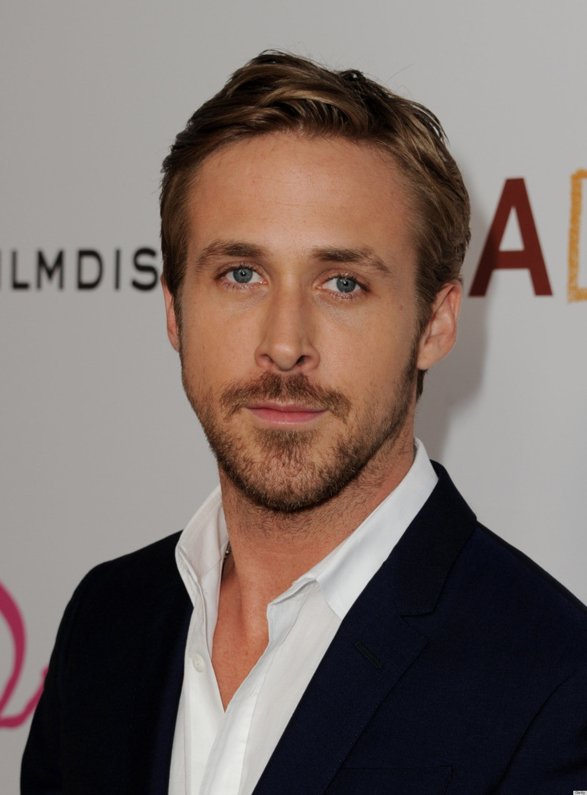
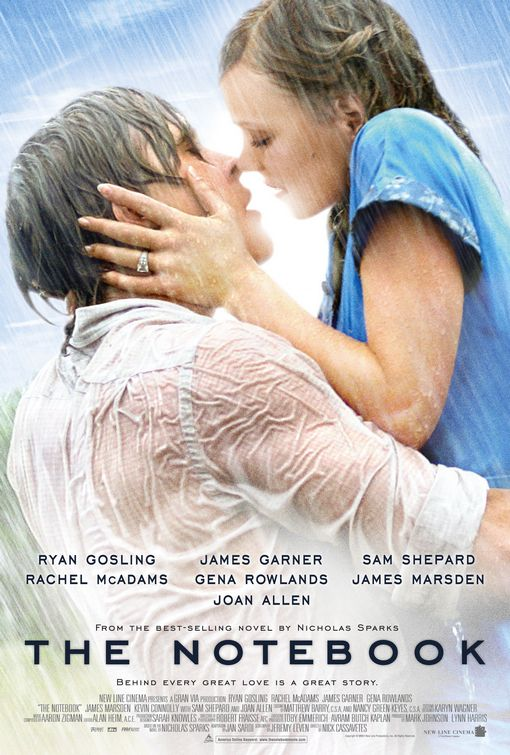
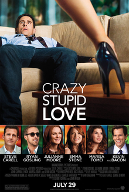
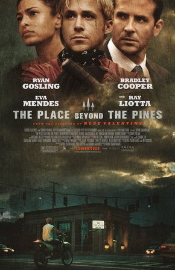
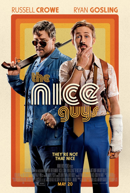
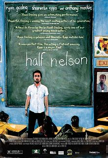

Titles
Filter By

Ryan Gosling
Candian Actor
Ryan Gosling, born on November 12, 1980, in London, Ontario, Canada, began his career on The Mickey Mouse Club (1993). As an adult, he starred in the romantic hit The Notebook (2004) and earned an Academy Award nomination for Half Nelson (2006) as well as a Golden Globe nomination for Lars and the Real Girl (2007). Gosling has also appeared in Blue Valentine (2010), Crazy, Stupid, Love (2010), The Ides of March (2011) and The Big Short (2015), among other projects. He received a Golden Globe and Oscar nomination for his portrayal of a jazz pianist in the hit movie musical La La Land (2016).






